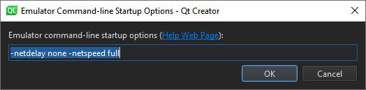

Connecting Android Devices
You can connect Android devices to the development PC using USB cables to build, run, debug, and analyze applications from Qt Creator.
To develop for Android, you must install a tool chain for building applications for Android devices on the development PC. Qt Creator can automatically download and install the tool chain and create a suitable build and run kit that has the tool chain and the Qt version for Android for the device's architecture.
To enable helpful code editing features for Java, such as code completion, highlighting, function tooltips, and navigating in code, add a Java language server.
Qt Creator integrates the Android Debug Bridge (adb) command-line tool for deploying applications to Android devices, running them, and reading their logs. The adb tool includes a client and server that run on the development host and a daemon that runs on the emulator or device.
The following video shows the whole process from installing Qt for Android to debugging an application on an Android device:
Requirements
To use Qt Creator to develop Qt applications for Android, you need Qt for Android and a tool chain that Qt Creator can automatically download, install, and configure for you. For more information about the requirements for developing with a particular Qt version, see the documentation for that Qt version. The links in this manual lead to the latest released Qt reference documentation.
Specifying Android Device Settings
Qt Creator offers to automatically install all the necessary packages and tools and to set up your development environment by creating debuggers, tool chains, and kits. You can use Qt Creator to:
- Download and extract the Android SDK Command-line Tools.
- Install or update the essential packages such as NDKs, build tools, and platform tools.
To set up the development environment for Android:
- Select Preferences > Devices > Android.
- In the JDK location field, set the path to the JDK. Qt Creator checks the JDK installation and reports errors.
By default, Qt Creator tries to find a supported AdoptOpenJDK or OpenJDK installation. If it cannot find one, you must set the path manually. If you have not installed a supported JDK, select
 to open the JDK download web page in the default browser.
to open the JDK download web page in the default browser.Note: Use a 64-bit JDK because the 32-bit one might cause issues with
cmdline-tools, and some packages might not appear in the list. - In the Android SDK location field, set the path to the folder to install the Android SDK Command-line Tools.
- Select Set Up SDK to automatically download and extract the Android SDK Command-line Tools to the selected path.
The SDK Manager checks that you have the necessary tools. If you need more packages or updates, the SDK Manager offers to add or remove the appropriate packages. Before taking action, it prompts you to accept the changes. In addition, it prompts you to accept Google licenses, as necessary.
- The Android NDK list lists the installed NDK versions. The SDK Manager installed the locked items. You can modify them only from the Android SDK Manager dialog. For more information, see Managing Android NDK Packages.
- Select the Automatically create kits for Android tool chains check box to allow Qt Creator to create the kits for you. Qt Creator displays a warning if it cannot find a suitable Qt version.
- Optionally, in the Android OpenSSL Settings group, set the path to the prebuilt OpenSSL libraries.
For Qt applications that require OpenSSL support, you can quickly add the Android OpenSSL support to your project. For more information, see Adding External Libraries.
- Select Download OpenSSL to download the OpenSSL repository to the selected path. If the automatic download fails, the download web page opens for manual download.
Manual Setup
Note: Use the latest Android SDK Command-Line Tools. Qt Creator does not support Android SDK Tools version 25.2.5 or earlier because it cannot fully integrate them.
However, if the automatic setup does not meet your needs, you can download and install Android SDK Command-line Tools, and then install or update the necessary NDKs, tools, and packages. For more information, see Getting Started with Qt for Android.
Viewing Android Tool Chain Settings
A JSON configuration file defines the Android SDK Command-Line Tools download URL, the essential packages list, and the appropriate NDK for each Qt version. The file is in the Qt Creator resource folder:
# Linux and macOS ~/.config/QtProject/qtcreator/android/sdk_definitions.json # Windows C:\Users\Username\AppData\Local\QtProject\qtcreator\android\sdk_definitions.json
For example, the SDK configuration file sets the NDK version 19.2.5345600 for use with Qt 5.12.0 to 5.12.5 and Qt 5.13.0 to 5.13.1:
"specific_qt_versions": [
{
"versions": ["5.12.[0-5]", "5.13.[0-1]"],
"sdk_essential_packages": ["build-tools;28.0.2", "ndk;19.2.5345600"],
"ndk_path": "ndk/19.2.5345600"
}
]
You can view the latest version of the configuration file that is up-to-date with the Android SDK and NDK changes, sdk_definitions.json, in Git.
Managing Android NDK Packages
To view the installed Android NDK versions, select Preferences > Devices > Android.

The SDK Manager installed the locked items. You can modify them only in the Android SDK Manager dialog. For more information, see Managing Android SDK Packages.
To manually download NDKs, select .
To use the selected NDK version for all Qt versions by default, select Make Default.
To add custom NDK paths manually to the global list of NDKs, select Add. This creates custom tool chains and debuggers associated to that NDK. However, you have to manually create a kit that uses the custom NDK. For more information, see Add kits.
Managing Android SDK Packages
Since Android SDK Tools version 25.3.0, Android has only a command-line tool, sdkmanager, for SDK package management. To make SDK management easier, Qt Creator has an SDK Manager for installing, updating, and removing SDK packages. You can still use sdkmanager for advanced SDK management.
To view the installed Android SDK packages, select Preferences > Devices > Android > SDK Manager.
You can show packages for the release channel you select in Show Packages > Channel. Common channel IDs include Stable, Beta, Dev, and Canary. To show and update also obsolete packages, select Include obsolete. To filter packages, select Available, Installed, or All.
To update the installed Android SDK packages, select Update Installed. Select the packages to update, and then select Apply.
To specify advanced sdkmanager settings, select Advanced Options and enter arguments in the SDK Manager arguments field. Available arguments lists the arguments with descriptions.

Managing Android Virtual Devices (AVD)
To view the available AVDs, select Preferences > Devices. You can add more AVDs.
You can see the status of the selected device in Current state. To update the status information, select Refresh.
To start an AVD, select Start AVD. Usually, you don't need to start AVDs separately because Qt Creator starts them when you select them in the kit selector to deploy applications to them.
To remove an AVD from the list and the kit selector, select Erase AVD.
To specify options for starting an AVD, select AVD Arguments.

Specify the options in Emulator command-line startup options. For available options, see Start the emulator from the command line.
Note: The Android Emulator has a bug that prevents it from starting on some systems. If an AVD does not start, you can try starting it manually by running the following commands:
cd <ANDROID_SDK>/emulator ./emulator -avd <AVD_NAME>
Creating a New AVD
To create new virtual devices:
- Select Preferences > Devices > Add > Android Device to open the Create New AVD dialog.

- Set the name, definition, architecture, target API level, and SD card size of the device.
- Select OK to create the AVD.
For more advanced options for creating a new AVD, use the command-line tool avdmanager or the Android Studio's native AVD Manager UI.
Debugging on Android Devices
You enable debugging in different ways on different Android devices. Look for USB Debugging under Developer Options. On some devices, Developer Options is hidden and becomes visible only when you tap the Build number field in Settings > About several times. For more information, see Configure on-device developer options.
Select a debug build configuration to build the application for debugging.
Note: Qt Creator cannot debug applications on Android devices if Android Studio is running. If the following message appears in Application Output, close Android Studio and try again:
Ignoring second debugger -accepting and dropping.